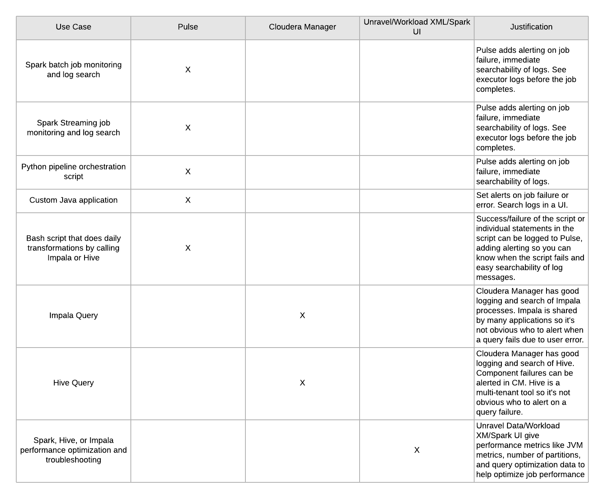

Overview
Pulse is an Apache 2.0 licensed log aggregation framework built on top of Solr Cloud (Cloudera Search). It can be used with applications written in any language, but was build especially for improving logging in Apache Spark Streaming applications running on Apache Hadoop.
Pulse gives application users full text centralized search of their logs, flexible alerts on their logs, and works with several visualization tools.
Pulse handles log lifecycle, so application developers don't have to worry about rotating or maintaining log indexes themselves.
License
Pulse is Apache 2.0 Licensed
System Requirements
- A Solr Cloud installation
- Java 1.8
- A Cloudera Manager managed cluster is recommended but not required
Features
Log Aggregation and Search - Add log aggregation, search, and alerts to your Java, Scala, Bash, or Python programs and scripts
Alerting
- Flexible alerting using the Pulse Alert Engine
- Write alerts using the full solr query syntax. Example alerts:
- There was an appliction Error in the last 5 minutes
- My application has stopped logging messages
- Email and web hook integrations
Log Lifecycle Management
- Built in rotation of logs.
- Keep logs for as long as you need them
- Automatically rotate new log indexes after a configured time period
- Easily search all logs
Dashboarding
- Integration with existing dashboards for rich UIs.
Visualization and search works with:
- Hue Search
- Arcadia Data
- Banana
Hadoop Native
- Pulse uses Solr for document indexing and search and can be deployed on your Hadoop cluster
- Use existing Sentry roles to control access to log data
Cloudera Manager Integration
- Simple deployment using CSDs and Parcels
- Manage and monitor Pulse from within Cloudera Manager
Pulse is used for centralized logging. This diagram compares Pulse to other tools given use cases:

Components
Collection Roller The collection roller is responsible for creating solr indexes for new applications in Pulse and deleting old or expired log collections.
Alert Engine
The Alert Engine is a daemon process with a set of alertRules. Alert rules can be configured
to notify developers and application users when an event happens.
See the Alerting Engine for more details and configuration options.
Log Collector The Log Collector is an HTTP server that receives log messages as JSON and puts them into SOLR collections.
See the Log Collector for more details and configuration options. Log Appender An HTTP log appender for log4j 1.x that will post json messages to the log collector.
See the Log Appender for more details.
There are also log appenders for Bash and Python in the 'appenders' folder
Architecture Diagram

Deploying config
Pulse has two configuration files, collection-roller.yml and alert-engine.yml
Both of these configs are deployed via safety valves. Alert Engine Example and Collection Roller Example
Place collection-roller.yml in Collection Roller Advanced Configuration Snippet (Safety Valve) for collection-roller.yml
Place the alert-engine.yml in Alert Engine Advanced Configuration Snippet (Safety Valve) for alert-engine.yml
Configuring Sentry for Solr
If Sentry is enabled for Solr, roles and grants will need to be configured for Pulse and for each Pulse application.
Add the pulse group to the Solr admin role. This assumes Sentry for Solr has been configured with an admin role. This step only needs to be done once after install. The example below assumes your admin role is named solradmin.
- solrctl sentry --add-role-group solradmin pulse
Create the role and grant for each application. In this example, sample_role is the name of the Solr role granting query privileges to the collection sample-app_all for the Pulse application sample-app. The sample-group group is added to that role.
- solrctl sentry --create-role sample_role
- solrctl sentry --grant-privilege sample_role 'collection=sample-app_all->action=Query'
- solrctl sentry --add-role-group sample_role sample_group
Running the application manually on a cluster
Run make package which will collect all the jars into target/lib.
Remove the .template suffix from these two files under the bin directory.
- cp env.sh.template env.sh
Change the kerberos keyTab and principal in jaas.conf to your own (you need to create one if you don't have it already)
Run individual components:
$ bin/collection-roller
$ bin/log-collector
$ bin/alert-engine
Running tests
Run all tests from the project root:
$ make test